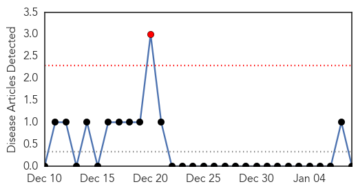
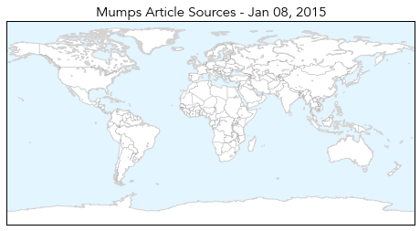
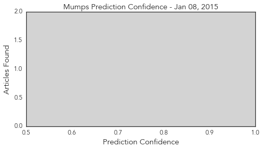
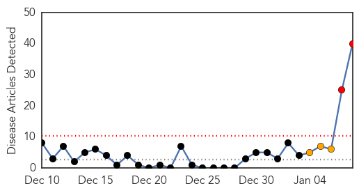
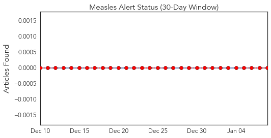
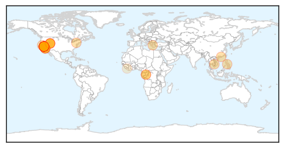
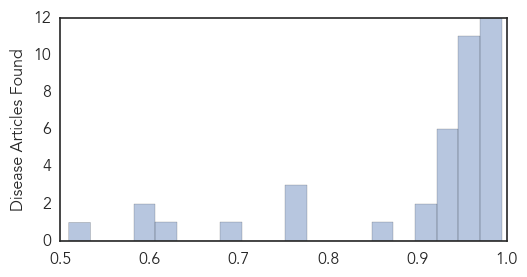

Mumps
30-Day Web Trend
1 alerts, 0 warnings

30-Day Twitter Trend
1 alerts, 0 warnings

Article Locations
Article Confidences
Top Articles:
-
No articles found for Jan 08, 2015
Top Tweets:
-
No tweets found for Jan 08, 2015
Measles
30-Day Web Trend
2 alerts, 3 warnings

30-Day Twitter Trend
0 alerts, 0 warnings

Article Locations
Article Confidences
Top Articles:
- 0.994
- Colorado Springs hospital says patient may have exposed others to measles
- 0.993
- News Scan for Jan 08, 2015
- 0.991
- Disneyland measles outbreak infects infants too young for vaccinations
- 0.991
- Two Infants Too Young For Vaccinations Contract Measles From Unvaccinated People At Disneyland
- 0.986
- Measles outbreak tied to Disneyland, California health officials say — RT USA
- 0.986
- While recent reports of possible measles in Wayne proved unfounded, disease remains a danger
- 0.985
- Measles Makes An Unwelcome Visit To Disneyland
- 0.985
- Measles Makes An Unwelcome Visit To Disneyland
- 0.983
- Measles Makes An Unwelcome Visit To Disneyland
- 0.973
- Measles Hits 9 People At California Disney Parks; Airborne Virus Is Highly Contagious
- 0.971
- Confirmed measles cases linked to visits at two Disney parks
- 0.971
- Disneyland measles: health alert issued in California
- 0.969
- Measles: Disneyland visitor hospitalized in Colorado Springs, Penrose Hospital patients warned
- 0.969
- California measles outbreak linked to Disneyland
- 0.968
- Highly Contagious Measles Outbreak Linked to Disneyland
- 0.964
- Vaccines: 10 questions and answers to help clear up confusion
- 0.963
- Health Agency Investigating Link Between Measles Cases and California’s Disney Theme Parks
- 0.961
- Measles Outbreak in California
- 0.958
- California confirms seven measles cases linked to Disneyland, Utah two
- 0.954
- 9 measles cases linked to Disney parks
- 0.953
- 9 measles cases linked to Disney theme parks in California: News
- 0.953
- 9 measles cases linked to Disney theme parks in California
- 0.951
- Nine Confirmed Measles Cases Linked to Disney Theme Parks
- 0.944
- California and Utah measles cases linked to Disneyland
- 0.941
- Measles Confirmed in El Paso County Patient
- 0.940
- Measles outbreak linked to Disneyland as nine people fall ill
- 0.940
- 9 measles cases linked to Disney theme parks in California
- 0.932
- 9 Cases Linked to Amusement Park
- 0.929
- 9 measles cases linked to Disney theme parks in Calif.
- 0.917
- California health officials link measles outbreak to Disneyland
- 0.913
- California health officials link measles outbreak to Disneyland
- 0.859
- Magic Kingdom becomes breeding ground for measles
- 0.769
- Officials Say Colorado Springs Patient Had Measles « CBS Denver
- 0.766
- Nightmare at Disneyland: There’s a measles outbreak in the happiest place on earth
- 0.754
- Health officials discuss reaction to measles cases in Utah
- 0.680
- Colo. resident gets measles after Disneyland visit
- 0.626
- Measles Outbreak Traced to Disneyland
- 0.598
- Disneyland Connected to At Least 9 Measles Cases Over Christmas Holiday
- 0.596
- Have you been exposed to Measles? - Story
- 0.509
- Measles outbreak in Bong
Top Tweets:
-
No tweets found for Jan 08, 2015